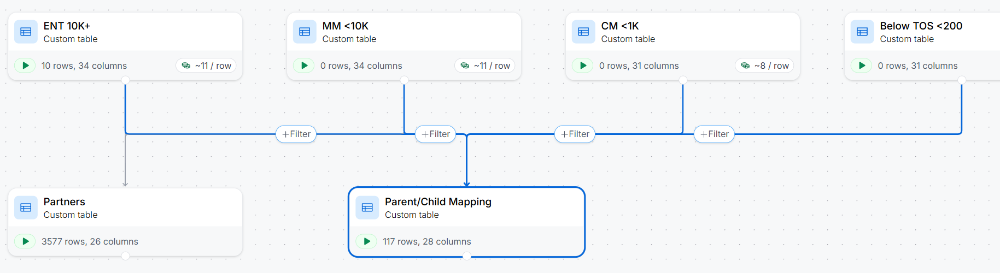

Clay Enrichment Waterfall
A tiered account enrichment and validation system I built in Clay to turn a CRM full of half-filled records into something you could actually route and report on, and to spend enrichment credits in proportion to what an account was worth.
- Role
- Design & build · Revenue Operations
- Timeline
- 2026 · at Anaconda
- Stack
- Clay, Salesforce (SOQL, Apex), HG Insights, ZoomInfo, PDL
- Status
- Built, never launched
Read this first
I designed and built this in Clay, and it was scheduled to go live the week I was laid off. It never ran in production. Everything below is the intended operating model and the reasoning behind it. There are no measured results, because there was never a chance to measure any.
I'd rather show the thinking with that caveat attached than quietly imply an outcome that never happened. The screenshot below is rebuilt in a personal Clay workspace to show the architecture. It isn't pulled from a production instance.
The problem
Account and contact data quality was inconsistent in ways that compounded: missing firmographics, unclear parent/child structures, duplicate accounts, and stale records with no activity against them. Each of those is survivable alone. Together they meant reporting that couldn't be trusted, routing that sent accounts to the wrong rep, and reps who had learned not to believe what the CRM told them.
Enrichment is the obvious answer and also the obvious trap: enrich everything and you pay the same premium for a 40-person company you'll never sell to as for a 30,000-person enterprise account.
The research that came first
Employee count was the primary driver of segment, and segment drove AE assignment. That made it the single most load-bearing field in the system. So before I designed anything, I went and found out which source could actually be trusted.
- Sampled 240 accounts across four size bands: small, medium, large, very large.
- Benchmarked each enrichment provider's employee count against public sources: 10-K filings and company websites.
- HG Insights turned out to be the gold standard across bands and geographies. ZoomInfo, Clay's native enrichment, and People Data Labs all showed variance that depended on how big the company was and where it was based. Reliable in some bands, unreliable in others.
That left the edge cases. I refined an employee-count validation prompt until it was reliable enough to serve as a tie-breaker in the two situations that actually mattered: when CRM and enrichment disagreed sharply, and when the enriched value would move an account into a different segment tier. That second one is really about handing the account to the wrong rep.
Segments
Employee count set the tier, and the tier set everything downstream.
| Tier | Employee count | Note |
|---|---|---|
| Below 200 | Under 200 | Not a target, the product is free below 200 employees |
| CM | 200–999 | Commercial |
| MM | 1,000–9,999 | Mid-market |
| ENT | 10,000+ | Enterprise |
The waterfall
Every account got a baseline. What it got beyond that depended on what it was worth pursuing. I reserved the deeper and costlier enrichment for MM and ENT instead of spraying it across the whole database.
| Tier | What gets enriched |
|---|---|
| Baseline | Employee count, HQ, industry/SIC, parent-account check |
| Below 200 | Baseline plus parent check, the lowest spend in the model |
| CM | Baseline plus LinkedIn URL and parent check |
| MM | Baseline plus LinkedIn URL, tech spend, parent/child checks, public and AI research as needed, partner intel |
| ENT | Everything in MM, plus deeper research, explicit child-account discovery, and partner intel |

Validation, not just enrichment
Filling fields in once is a project. Keeping them true is an operating model. So the second half of the design was a recurring hygiene layer with an owner and a cadence, instead of a cleanup someone remembers to do in a slow quarter.
- Account name sweep to flag duplicates and junk records, roughly every six months
- Data-quality account cleanup and reporting, roughly quarterly
- Activity staleness checks, monthly and quarterly
- Missing domain and country remediation, quarterly
- Employee count verification against brokers and public sources, weighted toward MM and ENT
Deduplication got its own operating model: Salesforce duplicate rules to catch what they could, recurring SOQL pulls to surface what slipped past them, and an Apex-based merge workflow to run the cleanup automatically instead of through someone's manual queue. Contacts got a lighter version. No-activity cleanup, email validation, and normalization of the profile fields that marketing and PLG targeting actually depend on.
What it produced
- A documented enrichment spec: attributes, sources, and rules, by tier
- A validation checklist with recurring hygiene jobs and reporting attached
- A dedupe playbook: the rules, the query, and the merge procedure
- A focused set of contact hygiene rules aligned to PLG and marketing targeting
What it was built to do
Stated as intent, because that's all it ever got to be. Improve completeness on the core firmographic and hierarchy fields that routing depends on (domain, country, employee count, HQ, industry, parent/child), cut duplicate and junk accounts out of the segmentation logic, and replace ad hoc cleanup with scheduled, repeatable data-quality operations.
The part I'd defend regardless of whether it ever ran is the spend model. Uniform enrichment treats a database as a list of equally valuable rows, which it never is. Tiering the waterfall means the accounts worth understanding deeply get understood deeply, and the rest cost almost nothing to keep clean.